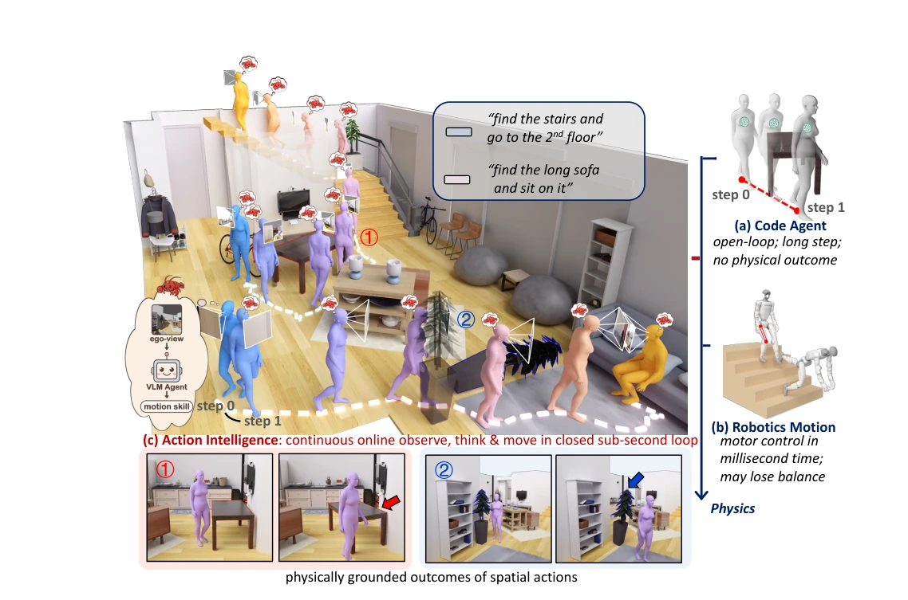
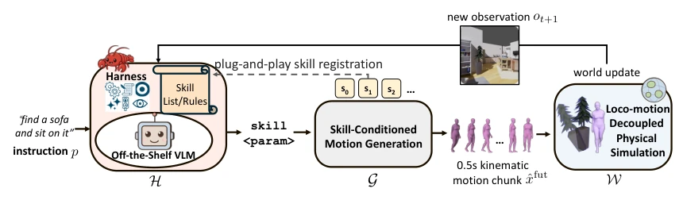
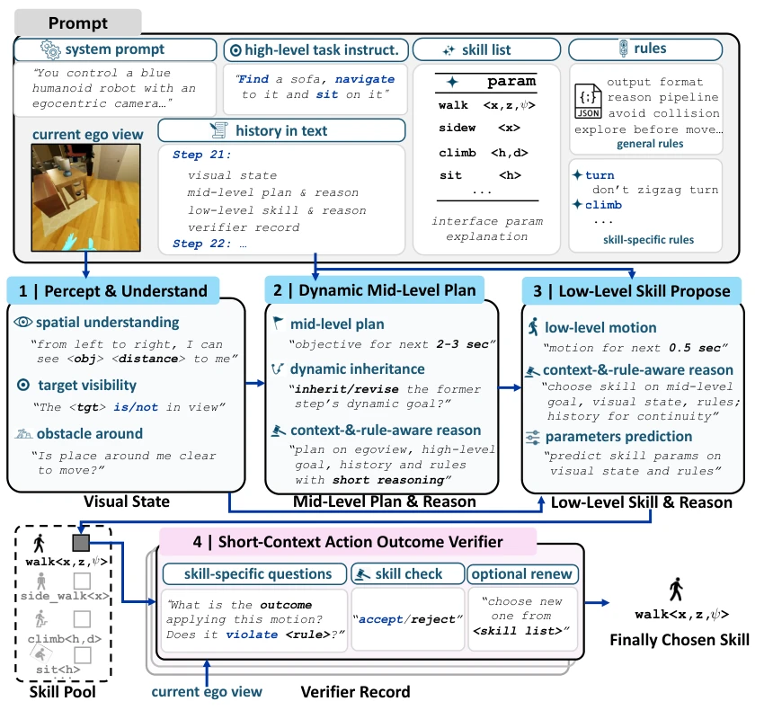
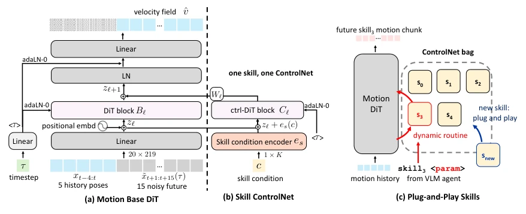
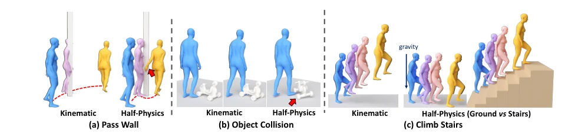
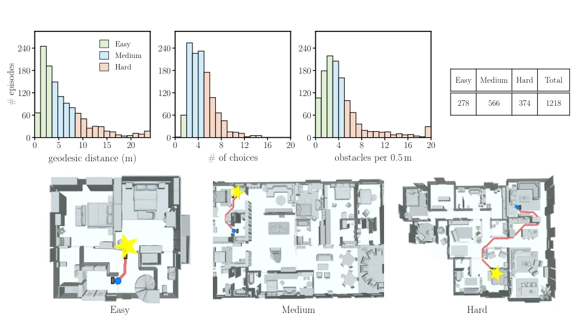
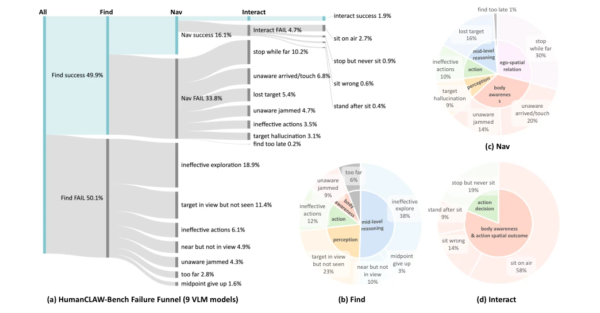
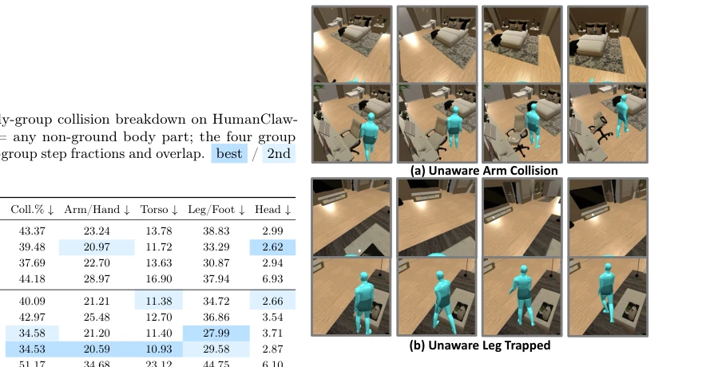
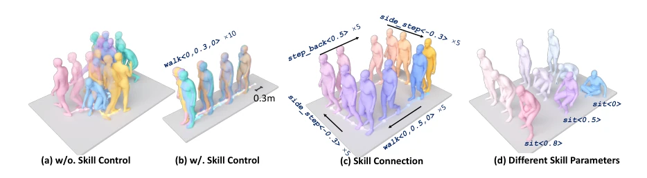

This work attempts to equip VLMs with a "body" to test action intelligence, and the idea is quite compelling. It cleverly decouples decision-making and execution, allowing the VLM to only issue commands while the physics engine is responsible for "crashing into walls" or "falling", thereby shifting the blame to the VLM rather than the motors. However, this "semi-physical" simulation is ultimately a flower in a greenhouse, ignoring balance control in the real world. Although the 16.8% pass rate is grim, it reveals the true problem of VLMs lacking "embodied self-awareness". However, does simplifying complex human motion into atomic skills lose too much fine-grained detail of natural interaction? This warrants discussion. Furthermore, testing only in simulation environments raises doubts about generalization in real-world deployment.
研究动机Motivation
评估 VLM 在具身场景下的能力很难。现有工作要么像 Code Agent 那样抽象掉运动，让模型像幽灵一样穿墙（Puig et al., 2018; Shridhar et al., 2020），要么像 VLA 那样把决策和策略耦合（Black et al., 2024; Zitkovich et al., 2023）。如果机器人摔倒，无法区分是 VLM 决策错误还是电机控制失败。我们需要一个环境，既保留物理后果（重力、碰撞），又剥离低层控制误差，从而单独测量 VLM 的“行动智能”——即根据物理反馈动态调整动作序列的能力。这有助于理解 VLM 的空间推理如何转化为物理行动。
Evaluating VLM capabilities in embodied scenarios is difficult. Existing works either abstract away motion like Code Agents, letting models walk through walls like ghosts (Puig et al., 2018; Shridhar et al., 2020), or couple decision and policy like VLA (Black et al., 2024; Zitkovich et al., 2023). If a robot falls, it is impossible to distinguish whether it is a VLM decision error or motor control failure. We need an environment that retains physical consequences (gravity, collision) while stripping away low-level control errors, thereby measuring VLM's "action intelligence" separately—i.e., the ability to dynamically adjust action sequences based on physical feedback. This helps understand how VLM spatial reasoning translates into physical action.

Figure 1 Where does action intelligence live? Three regimes of action along increasing physical embodiment: (a) action without a body, and (b) a body whose action is inseparable from balance and motor control. (c) HumanCLAW keeps body and world in a closed sub-second loop but factors out low-level control, so a failed episode reads as a wrong decision, not a lost balance. Main panel: one find-navigate-interact episode, each posed body a sub-second decision. Bottom: the physical outcomes it produces.
The HumanCLAW framework comprises three core modules. First is the VLM Harness, which guides the VLM to output atomic skills (e.g., walk<x,z>) from an egocentric perspective via context prompts, rather than vague instructions, and incorporates a verifier to check spatial safety. Second is skill-driven motion generation, using DiT as a base prior, with each skill equipped with an independent ControlNet adapter; zero-initialized weights freeze the base, ensuring skill semantics (e.g., sitting height) are accurately mapped to continuous motion. Finally is semi-physical simulation, where the world follows rigid body physics (Bullet), but the human is driven by velocity from motion sequences rather than torque, ignoring balance loss. This allows decision failures to be attributed to the VLM rather than the execution layer.

Figure 2 HumanCLAW closed-loop framework. A harnessed off-the-shelf VLM maps each egocentric observation to a skill call skill<param>; a skill-conditioned generator turns it into a 0.5 s full-body motion chunk, which a half-physics simulator executes under contact and gravity to return the next observation. New skills register plug-and-play, without retraining the VLM.

Figure 3 HumanCLAW harness. We guide an open-ended VLM from egocentric perception to executable humanoid control through a contextual high-to-mid-to-low reasoning scaffold, followed by a skill-specific verifier that corrects spatially unsafe or premature skill proposals.

Figure 4 Skill-conditioned motion generator. (a) A skill-agnostic Motion Base DiT predicts the velocity field of 15 future frames from 5 history poses via flow matching. (b) Each skill is a ControlNet adapter injected through a zero-initialized Wℓ, leaving the base frozen. (c) Adapters form a plug-and-play bag: the VLM-selected skill routes to its own ControlNet, and new skills add one more without touching the rest.

Figure 6 Half-physics versus pure kinematics. Pure kinematic playback walks through a wall and climbs stairs in mid-air; half-physics subjects the same motion to contact and gravity—the wall blocks the body and the stairs support it—while still factoring out balance and motor-tracking failures.
Constructed HumanCLAW-Bench, based on 41 indoor scenes from HSSD, containing 1218 find-object - navigate - interact tasks. Evaluated 9 SOTA VLMs, finding none could reliably complete tasks; the best, Gemini-3.1, had a success rate of only 16.8%. Metrics include FindSR, NavSR, InteractSR, and collision count. Analysis shows the bottleneck is not in perception (can see the target), but in "embodied self-awareness" (not knowing body position, whether arrived). Ablation studies show that increasing history length and verifier can improve performance, but cannot fundamentally solve navigation failure issues. Specific failure modes include stopping halfway, sitting into the air, etc.

Figure 7 Difficulty distributions over the 1,218 benchmark episodes. Each episode is scored along three geometric dimensions—distance (geodesic length to the nearest target), choice (turns plus rooms traversed), and obstacle (average obstacles within 1 m of the route)—and split into easy/medium/hard by fixed thresholds; bar color encodes the tier (green/blue/pink) and the inset table lists the overall counts. Distance is right-skewed, while choice and obstacle spread smoothly, giving well-separated difficulty tiers.

Figure 8 Where episodes fail across the nine VLMs. (a) A Find→Nav→Interact funnel over all episodes; (b–d) per-stage root-cause breakdowns colored by faculty. Failures concentrate in egocentric body awareness and ego-spatial self- localization—stopping while far, unawareness of arriving or being jammed, and sitting into thin air—not in perception or motor execution.

Figure9 Body-unawarenessfailures. Two episodes, each as egocentric (top) and third-person (bottom) views over consecutive steps: (a) the arm scrapes furniture unnoticed; (b) the legs jam against a low object while forward commands continue—the costs captured by Coll. and #Dtb.
其他图片Other Figures

Figure 5 Skill controllability. (a) Without skill control the prior collapses into colliding poses; (b) with control, walk tracks the requested 0.3 m stride. (c) Skills compose with natural transitions (walk/side_step/step_back into a loop); (d) sit at heights 0/0.5/0.8 realizes the commanded parameter.